Drupal & SEO
SEO Campus

The CMS SEO Checklist
Par Aleyda solis
{kind=link}
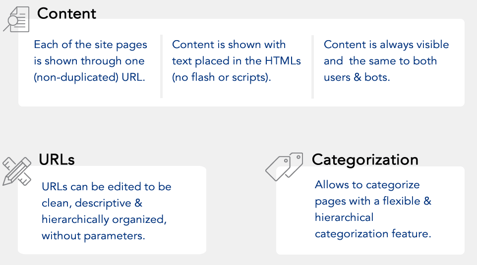
Architecture de Drupal
Un cœur et ...
... beaucoup de modules issus de la communauté
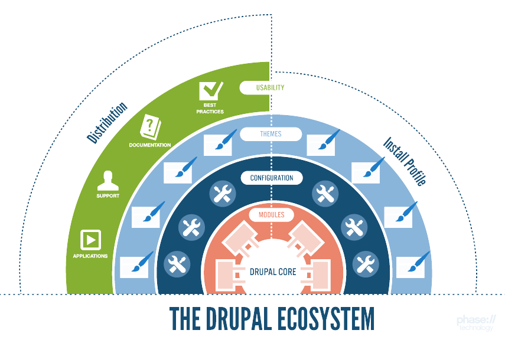
Un peu de vocabulaire
Node, Taxonomy, Block
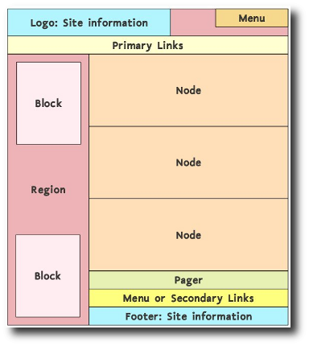
Pathauto
Réécriture automatique d'URLs
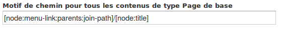
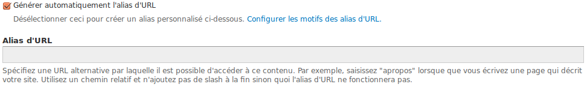
Metatag
Tout est dans le nom
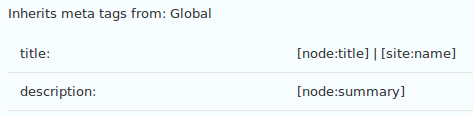 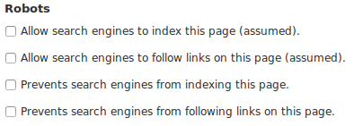
Robots.txt
Inutile sur un site seul
Utile sur un multisite / site international
Site_map
Créé l'URL /sitemap
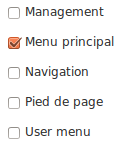
XML Sitemap
Attention : difficile à configurer
Pas encore en Drupal 8 (=> Simple XML Sitemap)
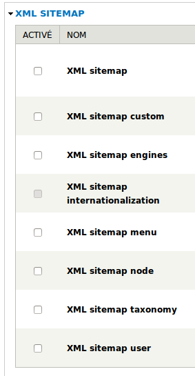
Redirect
Gestion des redirections
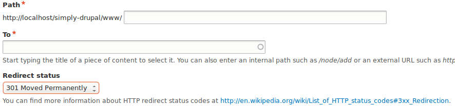
Internationalization
Toutes les stratégies (domaine, préfixe, ...) sont supportées
Mais il manque les hreflang => module "hreflang"
Fil d'ariane
Beaucoup (trop) de modules :
- Menu Breadcrumb
- Custom Breadcrumbs
- Crumbs
- Menu Position
La sémantique
"knowledge_graph",
"sdm" (Structured Data Markup),
"schemaorg", "efb", "microdata"
Incompatibles entre eux
Et le reste !
AMP, YoastSEO, ...
Amping Up DrupalModules à éviter !
SEO Checklist, ...
En fait, tous ceux qui ont "SEO" dans le nom...
Le thème
Tout est personnalisable :
- Accessibilité
- Sécurité (mieux en D8)
- Sémantique (Fil d'ariane, ...)
Problèmes classiques
Contenu dupliqué
Plusieurs urls existent (code 200) :
- node/%id%
- l'url réécrite ("alias")
=> Module "Global Redirect" (Drupal 7)
Aucune configuration
=> Module "Redirect" (Drupal 8)
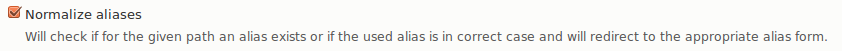
Pages inutiles
Tout contenu, tout terme de taxonomie crée une page
=> Ne pas oublier les NOINDEX
Structure
Pas de hiérarchie forcée
(Les "rubriques" n'existent pas)
C'est aussi une force, vous faites ce que vous voulez
Performance par défaut
Non-activation des caches
("Configuration" / "Performance")
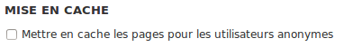
Ou utiliser Drupal 8 !
Tout est modulaire
Chaque site a des problèmes différents
Exemple : Les pages de confirmation de Webform ne sont pas connectées à Metatag, il faut donc développer un peu
Configuration par défaut
H1 = TITLE ~ URL
Pas réellement un problème, en plus tout est ajustable
Qu'apporte Drupal 8 ?
En SEO... rien, mais tous les modules sont portés
Beaucoup de travail sur les performances :
Big Pipe, RefreshLess
Questions ?
Retrouvez cette présentation en ligne.